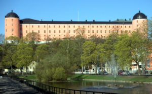
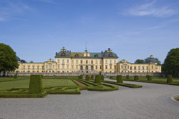
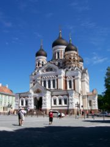
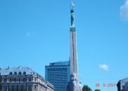

This year ICOT offers you a long historical tour to three famous Nordic and Baltic cities: Stockholm-The capital of  Sweden (also called the capital of Scandivania), Tallinn- the capital of
Sweden (also called the capital of Scandivania), Tallinn- the capital of  Estonia, and Riga- the capital of Latvia.
Estonia, and Riga- the capital of Latvia.
Estonia and Latvia joined in the Schengen visa agreement the December of 2007. So if you have schengen visa you need not to apply for visa again. If you do not have please contact us before registration. It is your reponsibility to be clear from immigration and customs during the tour. The city of Tallinn and Riga are UNESCO- World Heritage Site. We hope that you will enjoy the tour.
You have to book a place in the tour within 10th of February, 2008. The registration is open for the first 55 entries on first come first serve basis, register quickly otherwise you may miss the trip.
Filling up the registration form will just book a place in the tour and help us to have an estimation of the number of participants in the tour. You have to pay 200 NOK to confirm your place in the tour within 10th of February. Remember that if you cancel your booking this amount will be confiscated (will not be returned). The full amount will have to be paid within 1st of March.
You can pay the booking fee 200 NOK
- pay online by bank transfer to the account 0539.5538189 in postbanken, write your name in the message part
- or pay in cash, we will be in ICOT basement on Sunday, 10th February from 1800 to 2000 hours.
Expenses:
The expenses for the travel and accommodation (not food but a complimentary breakfast at Riga), after a huge (!) subsidy from ICOT fund is as follows...
Adults : 1450/-
Children (2+ -15) : 850/- (extra bed in their parents room)
0-2 (birth date till 16th March) : Free - (in their parents bed- Not their own bed)
Single room adult: 2274/- (if not interested in shared accommodation)
Things to remember:
Click here to register for the tour. (deadline 10th of February, 2008)
The tentative schedule is as follows:
17-03-08 |
2100 |
On way to Stockholm, We will have a short break at Uppsala Palace. |
By Bus |
 Uppsala Palace, Stockholm |
18-03-08 |
10:00 hrs |
Then the bus will leave us at Drottningholm palace. |
At 1545 the bus takes us to the cruise. |
 |
|
1800 |
The cruise goes to Tallinn (Estonia). |
by cruise |

Alexander Nevsky cathedral, Tallinn. |
19-03-08 |
0930, Arrival at Tallinn. guided tour for 3 hours (10:00 to 13:00 hrs). |
|||
|
We stay in Tallinn to the evening before we get back on the bus and travel to Latvia and the capital Riga. 1630 departure Tallinn. By bus, through E67 highway along the coast. |
 |
||
20-03-08: |
Complimentary breakfast at 08:00 hrs at Hotel. Guided tour from 0900-1200. |
|||
21-03-08: |
09:30, ArrivaIn at Stockholm. Guided tour in Stockholm from 1000-1300. We leave for Trondheim right after the guided tour. Around midnight, we will arrive at Trondheim. |
|||